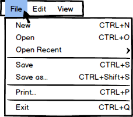
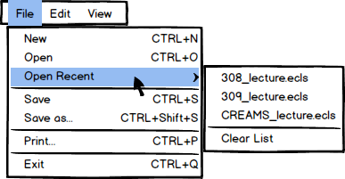
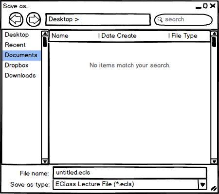

The first option under the Menu Bar is 'File.' As shown below in
Figure 1a, when the user cursors over to 'File' and clicks on it,
the following drop-down menu appears:
'New' - Clicking this option creates a new EClass lecture and will
prompt the user if they would like to import a presentation or start fresh.
'Open/Open Recent' - These two options allow the user to open
previously-made or already-available EClass lecture files. If the
'Open Recent' option is clicked, a second drop-down menu will appear
to the right showing a list of recently opened EClass lecture files shown
below in Figure 1b. The 'Clear List' option cleans out the list.
'Save/Save as' - The 'Save' option quickly saves the current
EClass lecture file if it has been edited. If the user is currently working
on a new, unsaved EClass lecture file, clicking 'Save' will open a
window prompting the user to specify what to save the file as and where to
save the file as shown in Figure 1c. 'Save as' will bring up the
same prompt.
'Print' - The 'Print' option allows the user to print out a
hard copy of the lecture as expanded slides.
'Exit' - Lastly, the 'Exit' option allows the user to quit
out of the EClass program. This is similar to clicking the 'X' in the
top-right corner of the window. If the user tries to quit out of the EClass
program while in an unsaved EClass lecture, the program will prompt the
user asking if the user would like to save the EClass lecture file before
quitting or if the user would like to discard all changes and quit.
|  |  |  |
Figure 1a: Drop-down menu under File. |
Figure 1b: Open Recent drop-down menu. |
Figure 1c: Save As pop-up menu. |